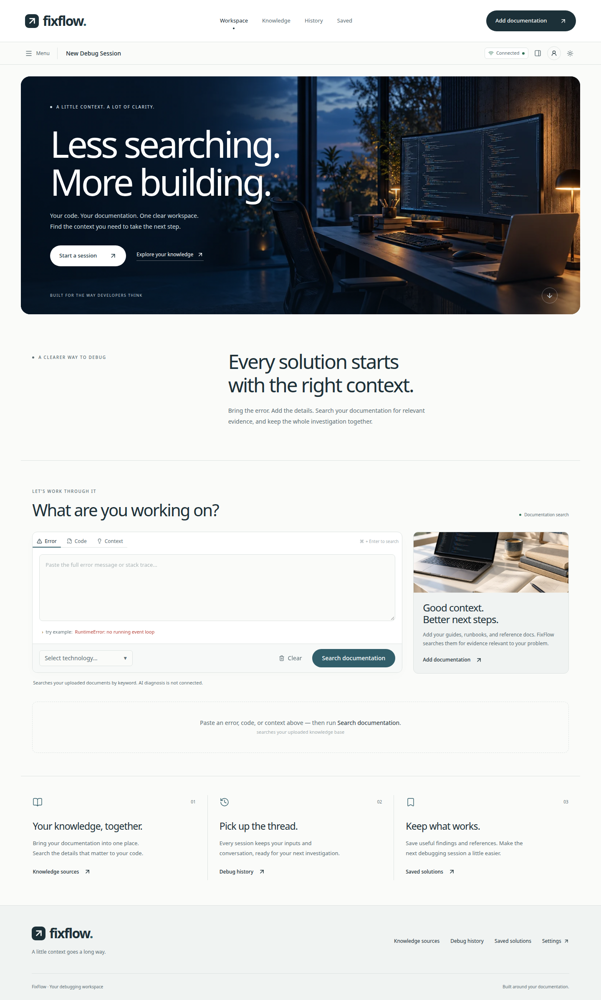
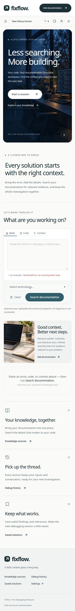
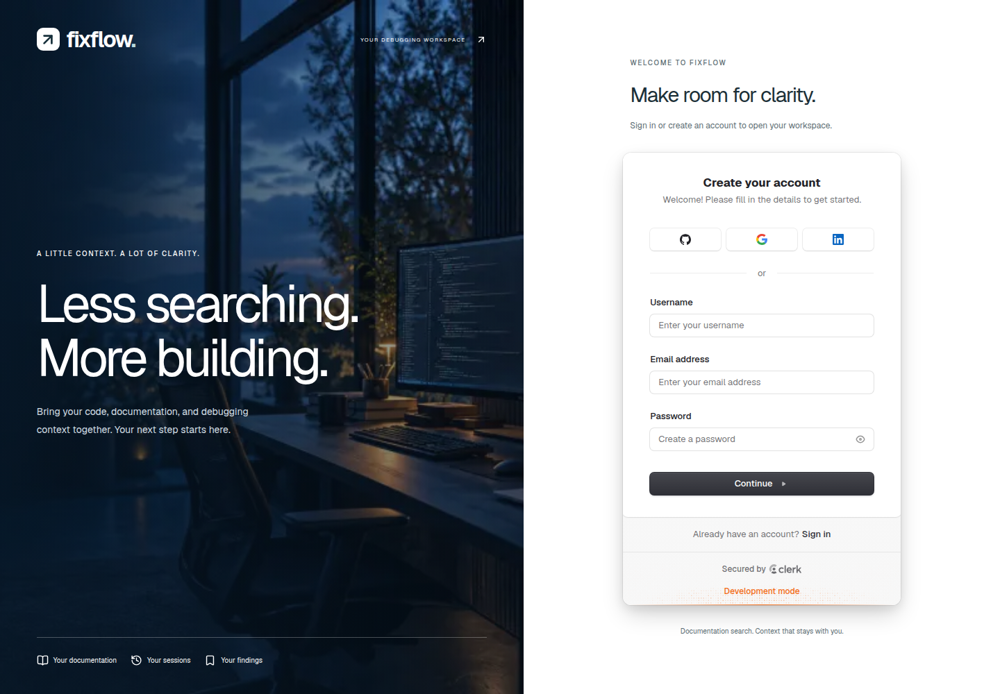
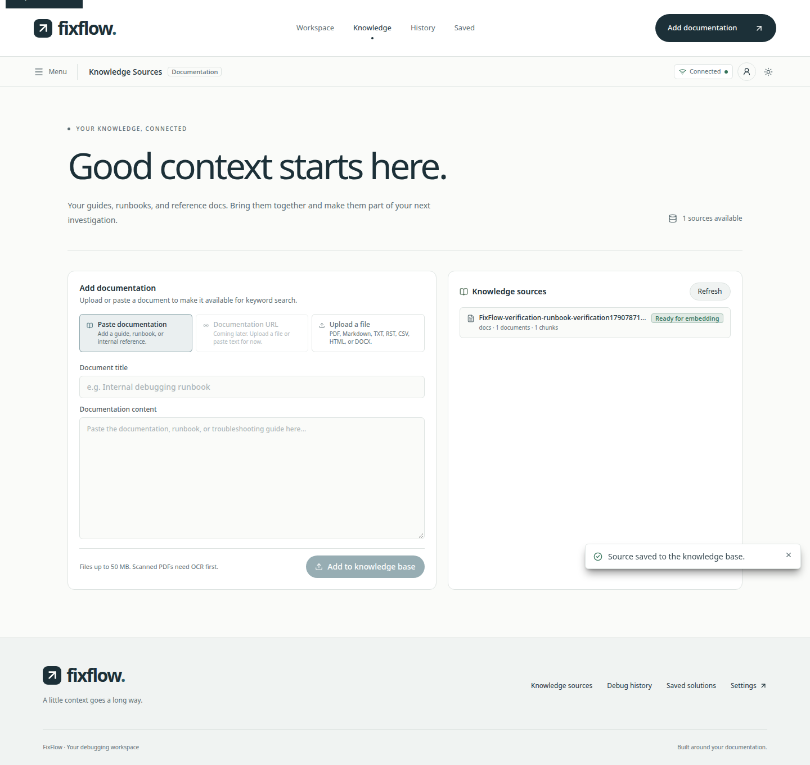
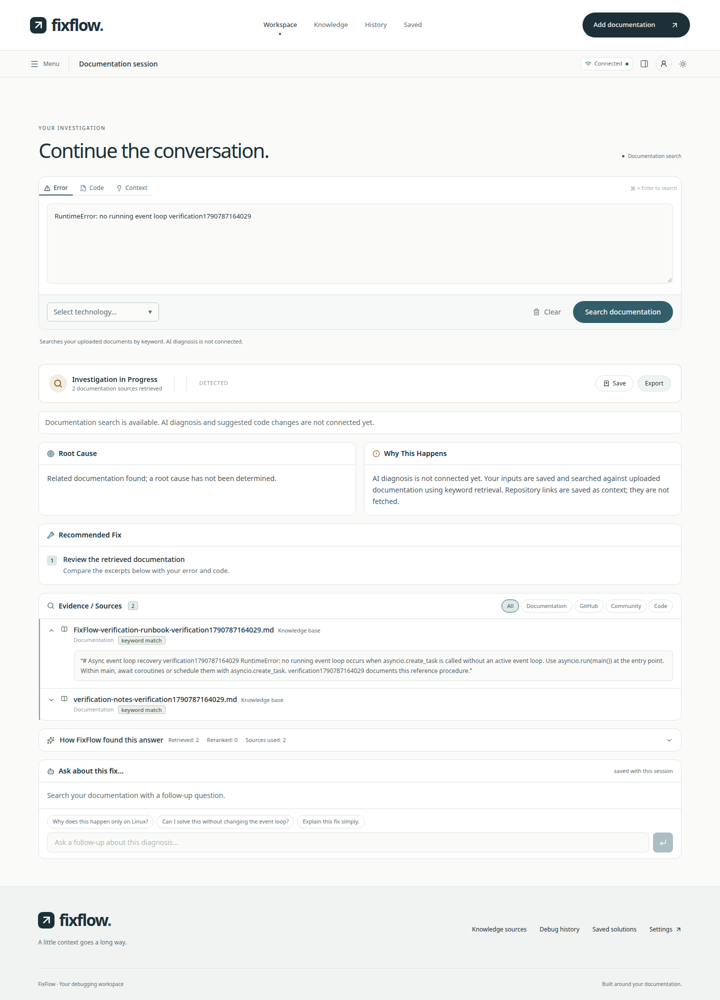
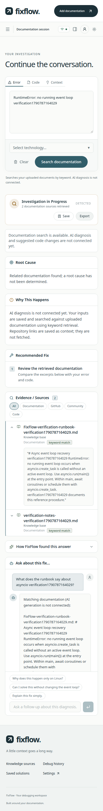
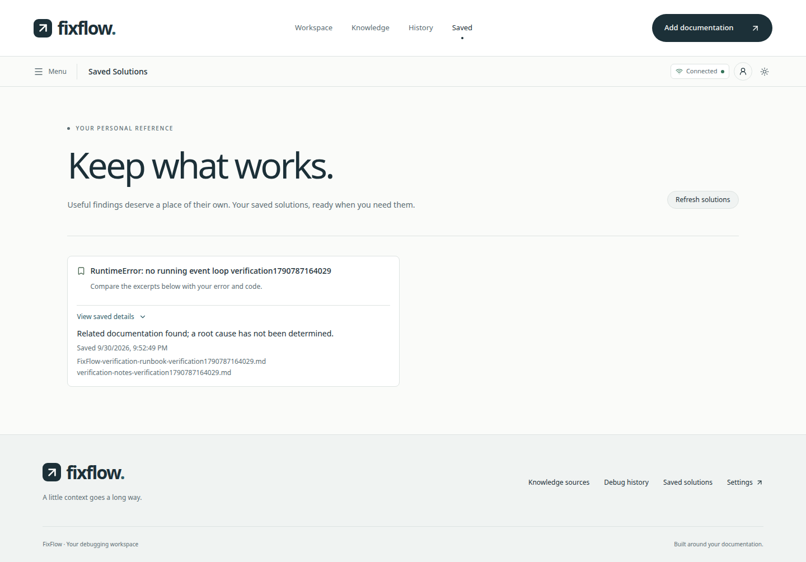
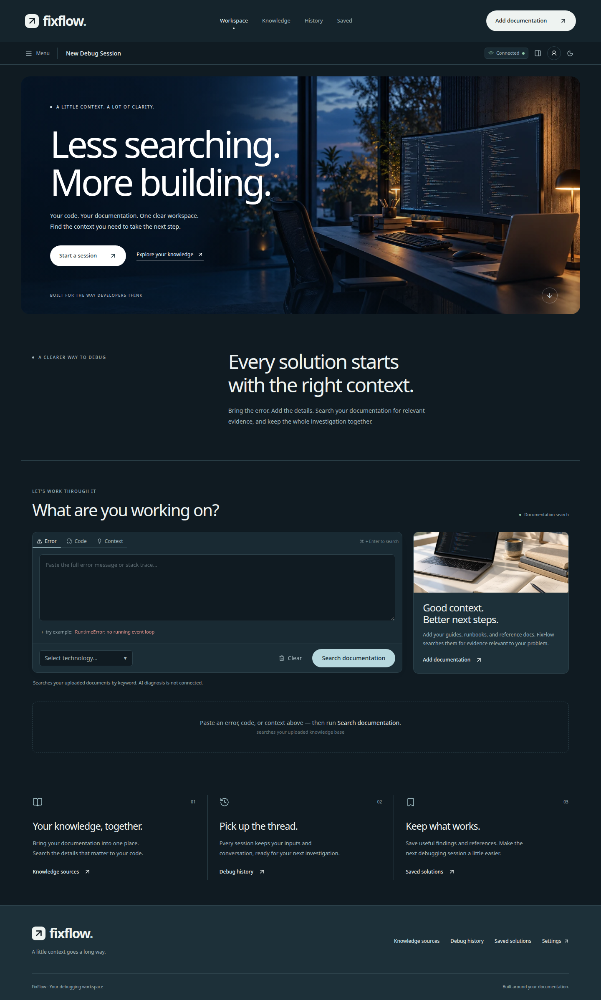
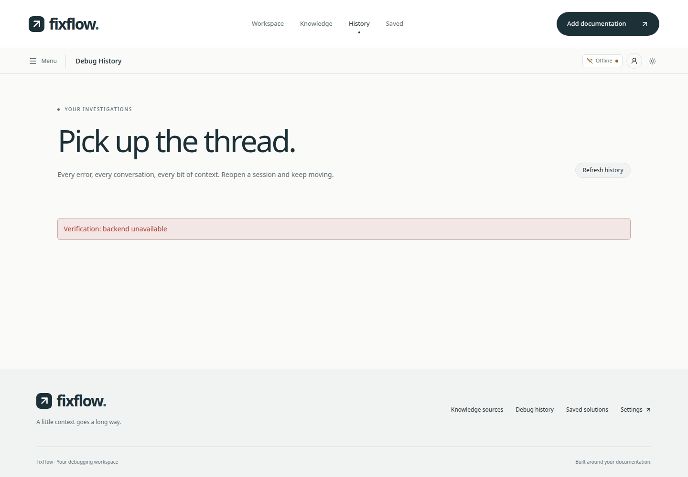

The workspace
Real components · mock empty backend
The epple reference adapted to a working software documentation workspace: custom imagery, editorial typography, responsive pages, and the existing FastAPI/PostgreSQL workflows.
Workspace screenshots render the real application in a test-only component harness. Mock states are labeled. Live workflow images use real FastAPI, ingestion, and PostgreSQL with synthetic test documents. The production account screenshot renders actual Next.js and Clerk. A logged-in production Clerk session was not tested.

Real components · mock empty backend

390px · mock empty backend

Real Next.js and Clerk · HTTP 200

Real ingestion worker and PostgreSQL

Real keyword retrieval · no generated diagnosis

Real persisted follow-up after reload

Real saved PostgreSQL record

Dark theme · persisted preference

Deliberate mock HTTP 503 · retry verified
| Check | Mode | Result |
|---|---|---|
| Desktop hero, local image loading and working start link | mock | passed |
| Empty input validation prevents a search | mock | passed |
| Native modal menu isolates page and Escape restores focus | mock | passed |
| Dark theme is usable and persists across a reload | mock | passed |
| Mobile layouts at 390px and 320px and reachable navigation | mock | passed |
| History and saved empty states, settings and disabled remote ingestion | mock | passed |
| Offline errors and working history retry | mock | passed |
| Real PostgreSQL API health | live API | passed |
| Paste document, accept 202, poll completed real ingestion | live API | passed |
| File upload preserves file and reaches retrieval-ready state | live API | passed |
| Keyboard submission sends inputs and displays real retrieved evidence | live API | passed |
| Save writes to PostgreSQL and saved detail is readable | live API | passed |
| History reopens persisted inputs and follow-up survives reload | live API | passed |
| Mobile context panel opens and closes | live API | passed |
| No browser runtime errors | all | passed |